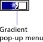
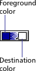

Using Director > Vector Shapes and Bitmaps > Using gradients
Using Director > Vector Shapes and Bitmaps > Using gradients |
Using gradients
Director can create gradients in the Paint window. You can use gradients with the Brush tool, the Bucket tool, the Text tool, or any of the filled shape tools. Typically, a gradient consists of a foreground color at one side (or the center) of an image and another color, the destination color, at the other side (or outside edge) of the image. Between the foreground and destination colors, Director creates a blend of the two.
To use a gradient:
1 |
Choose the Brush tool, the Bucket tool, or one of the filled shape tools. |
2 |
Choose the type of gradient from the Gradient pop-up menu.
 |
Choosing a gradient type automatically sets the current Paint window ink to Gradient. You can also choose Gradient ink from the Ink pop-up menu at the bottom left of the Paint window to create a gradient with all the current settings. |
|
To manually specify a gradient, choose Gradient Setting from the pop-up menu. See Editing gradients. |
|
3 |
Choose a foreground color from Gradient Colors pop-up menu on the left. |
The foreground color is the same color specified for the Paint window.
 |
|
4 |
Choose a destination color from the Gradient Colors pop-up menu on the right. |
The destination color is the color of the gradient when it completes the color transition. |
|
5 |
Use the current tool in the Paint window. |
Director uses the gradient you've defined to fill the image. |
|
6 |
To stop using a gradient, choose Normal from the Ink pop-up menu. See Using Paint window inks. |
You can change gradients before using them, by changing the settings in the Gradient Settings dialog box. In the Gradient Settings dialog box, you set the foreground and background colors as well as the pattern to use with your gradient. There are several pop-up menus that control the style of your gradient fill. Each choice you make is immediately previewed on the left.
To edit gradient settings:
1 |
Choose Gradient Settings from the Gradient Colors pop-up menu.
|
2 |
To determine whether the gradient is created with the pattern you select with the Patterns pop-up menu in the Paint window or with a dithered pattern, choose a Type option: |
Dither produces a smooth transition between colors. If you choose Dither, only dithering options appear in the Method pop-up menu below. |
|
Pattern uses the current pattern for the color transition. If you choose Pattern, only pattern options appear. |
|
3 |
To determine how a gradient shifts between colors, choose an option from the Method pop-up menu: |
If you choose Dither as the Type option, the following choices are available: |
|
Best Colors ignores the order of the colors in the palette. Instead, it uses only colors that create a continuous blend from foreground to background colors and blends them with a dithered pattern. Dithering is a technique that creates color from two or more colors of pixels interspersed together. |
|
Adjacent Colors uses all colors between the foreground and background colors and blends them with a dithered pattern. |
|
Two Colors uses only the foreground and background colors and blends them with a dithered pattern. |
|
One Color uses only the foreground color and fades it with a dithered pattern. |
|
Standard Colors ignores all colors between the foreground and background colors and adds several blended colors with a dithered pattern to create the gradient. |
|
Multi Colors ignores all the colors between the foreground and background colors and adds several blended colors with a randomized dithered pattern to create a smooth gradient. |
|
If you choose Pattern as the Type option, the following options are available: |
|
Best Colors ignores the order of the colors in the palette and uses only colors that create a continuous blend of the foreground and background colors. |
|
Best Transparent ignores the order of the colors in the palette and uses only those colors that create a continuous blend of the foreground and background colors. White pixels in patterns created with this method are transparent. |
|
Adjacent Colors uses all the colors in the palette between the foreground and background colors for the gradient. |
|
Adjacent Colors Transparent uses all the colors in the palette between the foreground and background colors for the gradient. White pixels in patterns created with this method are transparent. |
|
4 |
To determine the way the gradient fills an area in the Paint window, choose an option from the Direction pop-up menu: |
Top to Bottom puts the foreground color at the top and the destination color at the bottom. |
|
Bottom to Top puts the foreground color at the bottom and the destination color at the top. |
|
Left to Right puts the foreground color on the left and the destination color on the right. |
|
Right to Left puts the foreground color on the right and the destination color on the left. |
|
Directional lets you determine the direction of the gradient. You set the direction of the gradient in the Paint window with the paint tool used to fill the area. |
|
Shape Burst creates a gradient that starts at the edge of the area and moves toward the center. The foreground color begins at the edge and the destination color appears in the center. This option works only on the Macintosh. |
|
Sun Burst begins with the foreground color at the edge of the area and moves in concentric circles to the destination color at the center. |
|
5 |
To control how colors cycle in a gradient, choose a Cycles option: |
Sharp cycles have a banded appearance; smooth cycles go from foreground to destination, and then back to foreground. |
|
One cycles the gradient once through the range of colors you define. |
|
Two Sharp cycles the gradient through the range of colors twice, from foreground to destination and from foreground to destination. |
|
Two Smooth cycles the gradient from foreground to destination, and then from destination to foreground. |
|
Three Sharp cycles the gradient from foreground to destination three times. |
|
Three Smooth cycles the gradient from foreground to destination, destination to foreground, and foreground to destination. |
|
Four Sharp cycles the gradient from foreground to destination four times. |
|
Four Smooth cycles the gradient from foreground to destination, destination to foreground, foreground to destination, and destination to foreground. |
|
6 |
To choose how colors are distributed between the foreground and destination colors of the gradient, choose a Spread option: |
Equal provides even spacing of colors between the foreground and destination colors. |
|
More Foreground increases the amount of the foreground color in the gradient. |
|
More Middle increases the amount of the middle color in the gradient. |
|
More Destination increases the amount of the destination color in the gradient. |
|
7 |
To determine whether the full range of the gradient is created over the paint object, the cast member, or the entire Paint window, choose a Range option: |
Paint Object paints the full gradient as the fill or brush stroke of the object, regardless of the object's location in the Paint window. |
|
Cast Member paints the full gradient within the size of the cast member. |
|
Window paints a full gradient only if the object is the length or width of the entire window; otherwise, it paints a partial gradient corresponding to the object's location in the window. |
|
8 |
To choose a foreground, background, or destination color for the gradient, use the appropriate color picker. |
The foreground color is the starting color of the gradient; the destination color is the ending color. Background color has no effect unless you are using a pattern. |
|
9 |
To choose a pattern, use the Patterns pop-up menu. |